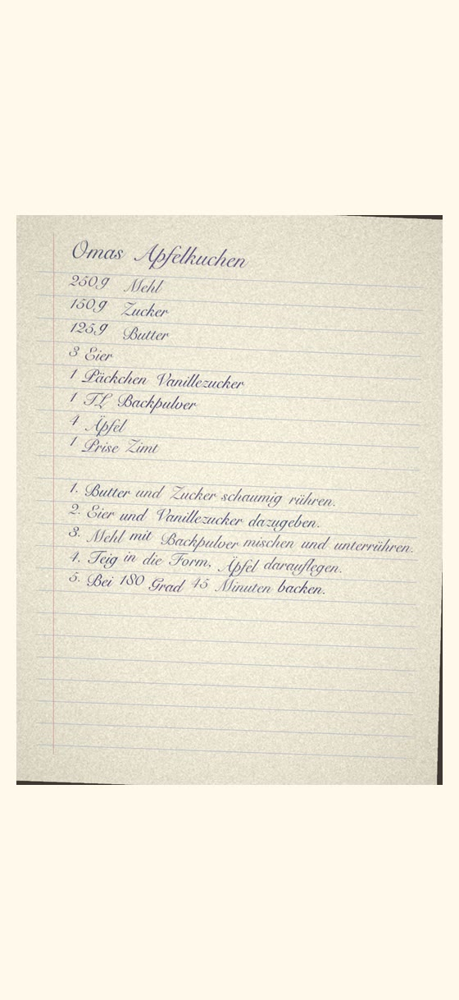
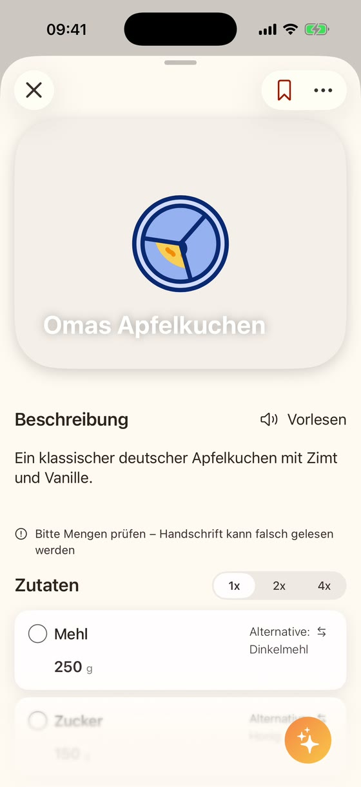
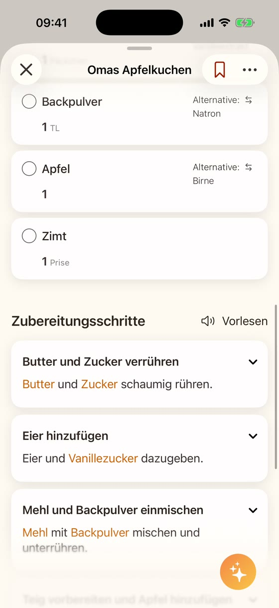

Omas Rezeptkarten, ein Zettel von einer Freundin, dein eigenes Küchenheft: Ein handgeschriebenes Rezept einscannen heißt hier abfotografieren. ReciPics macht aus der Handschrift ein Rezept in deinem Kochbuch, mit Zutaten, Mengen und Schritten, die du bearbeiten kannst. Klare Schrift klappt am besten, Mengen solltest du immer prüfen. Das Papier bleibt in der Schublade, das Rezept ist auf deinem iPhone.
Im App Store ansehen


Echte Screens aus der App. Die Karte ist ein Beispiel, das wir zum Testen erstellt haben: ein digitales Bild in einer Handschrift-Schriftart, kein Foto von echtem Papier. Echte Handschrift ist schwerer zu lesen als diese.
ReciPics ist darauf ausgelegt, die Mengen zu übernehmen, die auf der Karte stehen, und keine fehlenden zu erfinden. Steht bei einer Zutat keine Menge, soll sie leer bleiben, und du kannst sie selbst ergänzen. Die KI kann trotzdem Fehler machen. ReciPics kann kurze Schrittüberschriften und vorgeschlagene Zutaten-Alternativen (als „Alternative“ angezeigt) ergänzen. Sie stehen nicht im Original.
Handschrift kann falsch gelesen werden. Nach einem Scan zeigt die App den Hinweis „Bitte Mengen prüfen – Handschrift kann falsch gelesen werden“. Vergleiche das Rezept vor dem Kochen mit der Karte, vor allem Mengen und Temperaturen.
Am besten funktionieren klare, flache und gut beleuchtete Fotos. Sehr blasse, verwischte oder eng geschriebene Karten sind schwerer zu lesen.
Prüfe Zutaten bei Allergien oder Unverträglichkeiten immer selbst; ReciPics kann eine Zutat falsch lesen oder auslassen.
Jeder Foto-Scan zählt zum KI-Kontingent der App. Ohne Premium ist es begrenzt.
Weitere Wege, Rezepte zu speichern: Rezepte aus dem Kochbuch scannen · Rezepte von Instagram und TikTok speichern · Rezepte von Websites speichern
Über Rezepte von Familie und Freunden entscheiden sie selbst; frag, bevor du sie weitergibst. Nutze ReciPics nur für dein privates Kochbuch. Um das Foto zu lesen, werden das Foto und der auf deinem iPhone erkannte Text an unsere Server und an unseren KI-Anbieter OpenAI (USA) gesendet; siehe Datenschutz.
ReciPics im App Store ladenFür iPhone mit iOS 26 oder neuer.